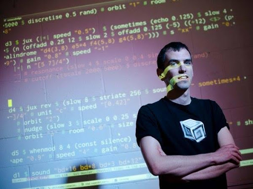
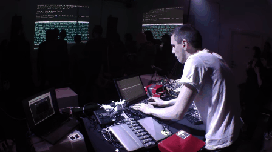
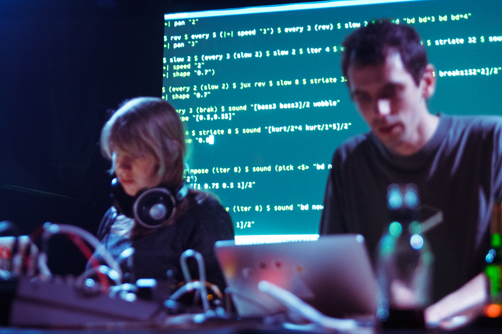

YAXU
YAXU



Alex McLean (né en 1975) est un musicien et chercheur britannique.
Il est connu pour son rôle clé dans le développement du codage en direct en tant que pratique musicale, notamment pour avoir créé TidalCycles, un
environnement de codage en direct qui permet aux musiciens programmeurs de coder simplement et rapidement, et pour avoir inventé le terme Algorave avec Nick Collins.
Il est un membre actif et influent de la communauté du live coding ;
il est co-fondateur de TOPLAP et co-responsable du Live
Coding Research Network.Alex est co-fondateur
du label de disque Chordpunch.
McLean est également connu pour son travail dans le domaine de l'art logiciel.
Il a remporté le prix Transmediale de l'art logiciel en 2002 pour forkbomb.pl, un court script Perl qui crée une image unique à partir d'un système
d'exploitation fortement sollicité, et a cofondé le dépôt d'art logiciel runme.org avec Olga Goriunova, Amy Alexander et Alexei Shulgin en 2003, qui a reçu une mention honorifique dans la catégorie netvision du Prix Ars Electronica en 2004.
Alex McLean se produit en solo sous le nom de Yaxu et est également membre des groupes de codage en direct Slub et Canute (groupe). Il a également collaboré avec Kate Sicchio pour combiner le codage en direct et la chorégraphie en direct.
En 2016, McLean a été artiste sonore en résidence à l'Open Data Institute, dans le cadre du programme Sound and Music embedded.